Appendix - Phase 1 Fish Passage Assessment Data and Photos
| Location and Stream Data |
|
Crossing Characteristics | – |
|---|---|---|---|
| Date | 2022-08-31 | Crossing Sub Type | Round Culvert |
| PSCIS ID | 123392 | Diameter (m) | 1.15 |
| External ID | – | Length (m) | 12 |
| Crew | MW, TP, DN, AN | Embedded | Yes |
| UTM Zone | 9 | Depth Embedded (m) | 0.05 |
| Easting | 638553.4 | Resemble Channel | No |
| Northing | 6054802 | Backwatered | Yes |
| Stream | Lemieux Creek | Percent Backwatered | 100 |
| Road | Quick school road | Fill Depth (m) | 0.75 |
| Road Tenure | – | Outlet Drop (m) | 0 |
| Channel Width (m) | 3.6 | Outlet Pool Depth (m) | 0.5 |
| Stream Slope (%) | 1.5 | Inlet Drop | No |
| Beaver Activity | No | Slope (%) | 1 |
| Habitat Value | Low | Valley Fill | Deep Fill |
| Final score | 16 | Barrier Result | Potential |
| Fix type | Replace with New Open Bottom Structure | Fix Span / Diameter | 10 |
Photos: PSCIS ID 123392. From top left clockwise: Road/Site Card, Barrel, Outlet, Downstream, Upstream, Inlet.
|
|||
| Comments: Adjacent landowner reports culvert was replaced last year. Some dewatering downstream of outlet pool. Passable crossing, deep outlet pool but the stream dewaters after the pool. 13:14 |
| Location and Stream Data |
|
Crossing Characteristics | – |
|---|---|---|---|
| Date | 2022-08-31 | Crossing Sub Type | Round Culvert |
| PSCIS ID | 123393 | Diameter (m) | 1.3 |
| External ID | – | Length (m) | 21 |
| Crew | MW, TP, DN, AN | Embedded | No |
| UTM Zone | 9 | Depth Embedded (m) | – |
| Easting | 638516 | Resemble Channel | No |
| Northing | 6054722 | Backwatered | Yes |
| Stream | Lemieux creek | Percent Backwatered | 90 |
| Road | Highway 16 | Fill Depth (m) | 1.5 |
| Road Tenure | Moti | Outlet Drop (m) | 0 |
| Channel Width (m) | 2.8 | Outlet Pool Depth (m) | 0.9 |
| Stream Slope (%) | 1.5 | Inlet Drop | No |
| Beaver Activity | Yes | Slope (%) | 1 |
| Habitat Value | Low | Valley Fill | Deep Fill |
| Final score | 24 | Barrier Result | Barrier |
| Fix type | Replace with New Open Bottom Structure | Fix Span / Diameter | 10 |
| Photos: PSCIS ID 123393. From top left clockwise: Road/Site Card, Barrel, Outlet, Downstream, Upstream, Inlet.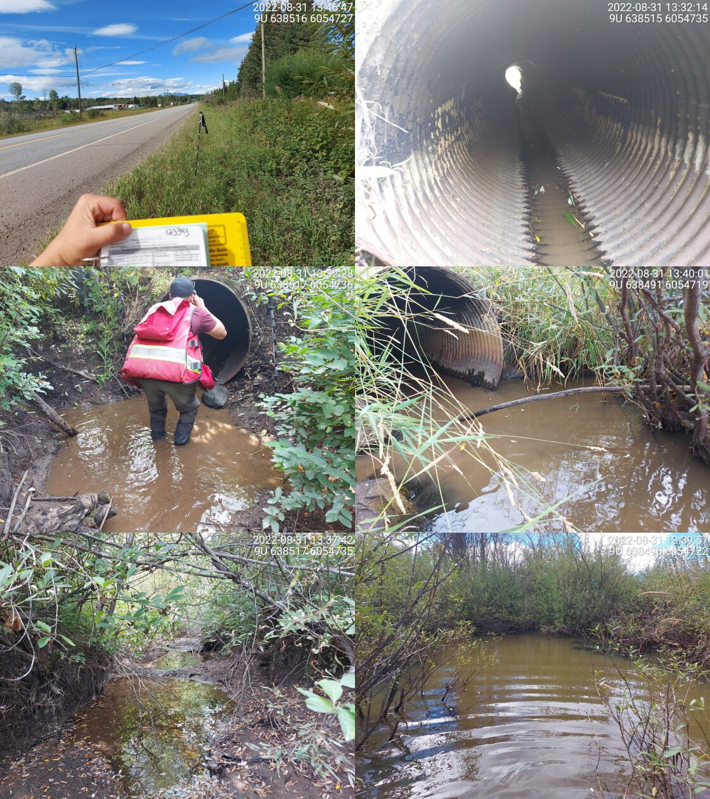 | |||
| Comments: Very deep outlet pool. Wetland downstream, beaver activity upstream. Almost fully backwatered, a little bit of flow through the culvert. 13:32 |
| Location and Stream Data |
|
Crossing Characteristics | – |
|---|---|---|---|
| Date | 2022-08-31 | Crossing Sub Type | Round Culvert |
| PSCIS ID | 123426 | Diameter (m) | 1.4 |
| External ID | – | Length (m) | 22 |
| Crew | MW, TP, DN, AN | Embedded | Yes |
| UTM Zone | 9 | Depth Embedded (m) | 0.2 |
| Easting | 636971 | Resemble Channel | Yes |
| Northing | 6056680 | Backwatered | No |
| Stream | Robin Creek | Percent Backwatered | – |
| Road | Highway 16 | Fill Depth (m) | 2.2 |
| Road Tenure | Moti | Outlet Drop (m) | 0 |
| Channel Width (m) | 2.3 | Outlet Pool Depth (m) | 0.05 |
| Stream Slope (%) | 2 | Inlet Drop | No |
| Beaver Activity | No | Slope (%) | 1.5 |
| Habitat Value | High | Valley Fill | Deep Fill |
| Final score | 19 | Barrier Result | Potential |
| Fix type | Replace with New Open Bottom Structure | Fix Span / Diameter | 10 |
| Photos: PSCIS ID 123426. From top left clockwise: Road/Site Card, Barrel, Outlet, Downstream, Upstream, Inlet.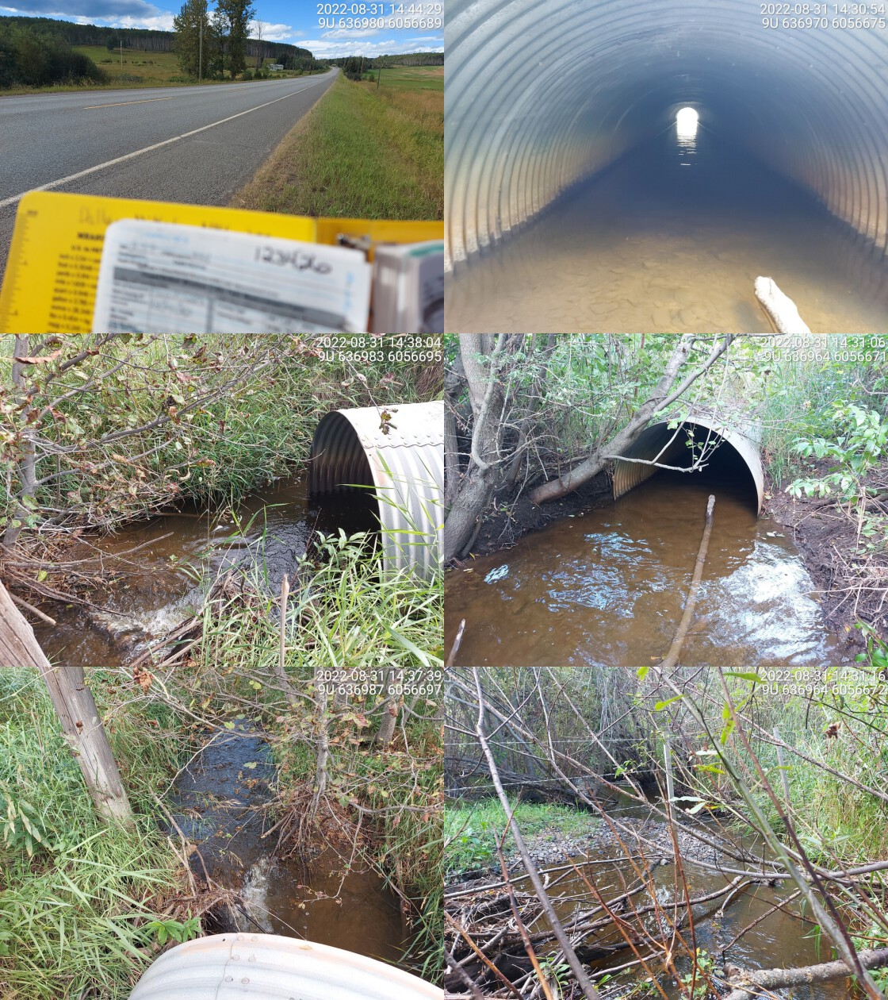 | |||
| Comments: Embedded culvert with high flow. 14:37 |
| Location and Stream Data |
|
Crossing Characteristics | – |
|---|---|---|---|
| Date | 2022-09-13 | Crossing Sub Type | Bridge |
| PSCIS ID | 123750 | Diameter (m) | 4.5 |
| External ID | – | Length (m) | 19 |
| Crew | TP, VJ | Embedded | – |
| UTM Zone | 9 | Depth Embedded (m) | – |
| Easting | 607513.9 | Resemble Channel | – |
| Northing | 6067563 | Backwatered | – |
| Stream | Tributary to Miller Creek | Percent Backwatered | – |
| Road | McDonnell FSR | Fill Depth (m) | – |
| Road Tenure | BCTS | Outlet Drop (m) | – |
| Channel Width (m) | – | Outlet Pool Depth (m) | – |
| Stream Slope (%) | – | Inlet Drop | – |
| Beaver Activity | No | Slope (%) | – |
| Habitat Value | – | Valley Fill | – |
| Final score | 3 | Barrier Result | Passable |
| Fix type | – | Fix Span / Diameter | – |
| Photos: PSCIS ID 123750. From top left clockwise: Road/Site Card, Barrel, Outlet, Downstream, Upstream, Inlet.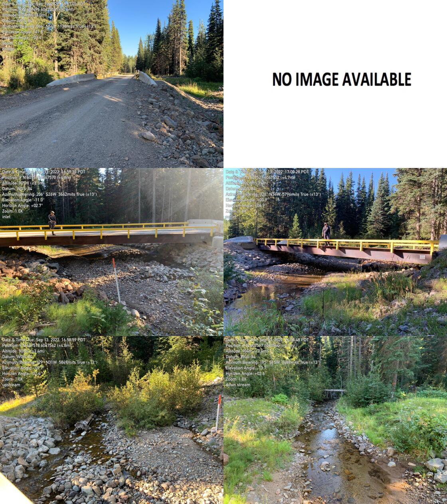 | |||
| Comments: New bridge, well built. Room on both banks for freshet melt. 16:57:00 |
| Location and Stream Data |
|
Crossing Characteristics | – |
|---|---|---|---|
| Date | 2022-08-29 | Crossing Sub Type | Oval Culvert |
| PSCIS ID | 197657 | Diameter (m) | 2.3 |
| External ID | – | Length (m) | 18 |
| Crew | AI, TP | Embedded | Yes |
| UTM Zone | 9 | Depth Embedded (m) | 1 |
| Easting | 665525.1 | Resemble Channel | Yes |
| Northing | 6044126 | Backwatered | No |
| Stream | Perow Creek | Percent Backwatered | – |
| Road | Highway 16 | Fill Depth (m) | 0.5 |
| Road Tenure | – | Outlet Drop (m) | 0 |
| Channel Width (m) | 4.6 | Outlet Pool Depth (m) | 0 |
| Stream Slope (%) | 3 | Inlet Drop | No |
| Beaver Activity | No | Slope (%) | 1.5 |
| Habitat Value | Medium | Valley Fill | Deep Fill |
| Final score | 14 | Barrier Result | Passable |
| Fix type | – | Fix Span / Diameter | – |
| Photos: PSCIS ID 197657. From top left clockwise: Road/Site Card, Barrel, Outlet, Downstream, Upstream, Inlet.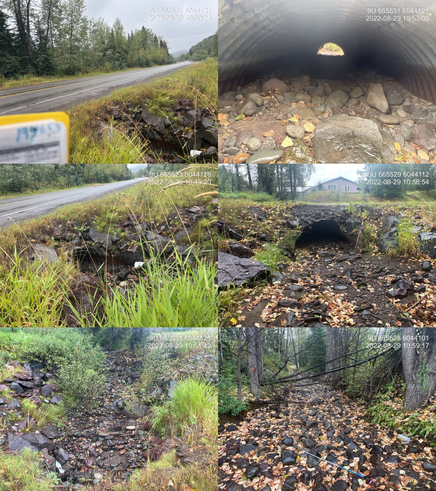 | |||
| Comments: Stream was dry at the time of survey but had water last year during extremely dry ear. Culvert appears passable for all life stages. There is a private land residential development impacting the stream. The channel is constricted and has large chunks of riprap throughout. 10:45 |
| Location and Stream Data |
|
Crossing Characteristics | – |
|---|---|---|---|
| Date | 2022-08-29 | Crossing Sub Type | Ford |
| PSCIS ID | 198109 | Diameter (m) | – |
| External ID | 1801071 | Length (m) | – |
| Crew | MW, TP | Embedded | – |
| UTM Zone | 9 | Depth Embedded (m) | – |
| Easting | 665432 | Resemble Channel | – |
| Northing | 6044495 | Backwatered | – |
| Stream | Perow Creek | Percent Backwatered | – |
| Road | Transmission Line | Fill Depth (m) | – |
| Road Tenure | Hydro | Outlet Drop (m) | – |
| Channel Width (m) | – | Outlet Pool Depth (m) | – |
| Stream Slope (%) | – | Inlet Drop | – |
| Beaver Activity | No | Slope (%) | – |
| Habitat Value | – | Valley Fill | – |
| Final score | 0 | Barrier Result | Unknown |
| Fix type | – | Fix Span / Diameter | – |
| Photos: PSCIS ID 198109. From top left clockwise: Road/Site Card, Barrel, Outlet, Downstream, Upstream, Inlet.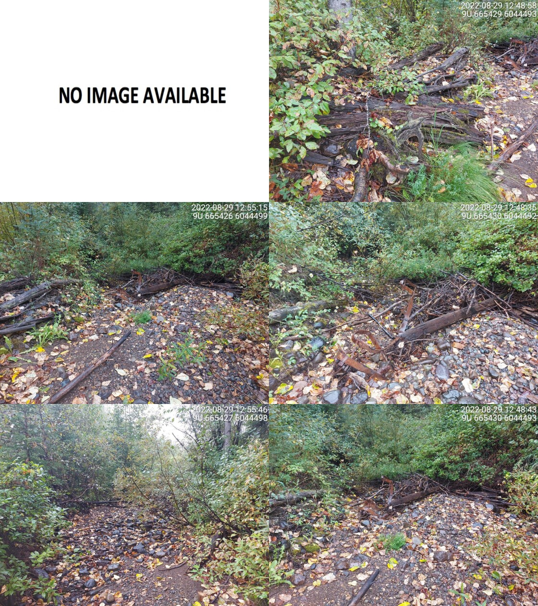 | |||
| Comments: No crossing. Transmission line. 12:49 |
| Location and Stream Data |
|
Crossing Characteristics | – |
|---|---|---|---|
| Date | 2022-08-30 | Crossing Sub Type | Bridge |
| PSCIS ID | 198110 | Diameter (m) | 6.1 |
| External ID | 2022083050 | Length (m) | 4 |
| Crew | MW, TP, VJ | Embedded | – |
| UTM Zone | 9 | Depth Embedded (m) | – |
| Easting | 645355 | Resemble Channel | – |
| Northing | 6034873 | Backwatered | – |
| Stream | Stock Creek | Percent Backwatered | – |
| Road | Private | Fill Depth (m) | – |
| Road Tenure | Private | Outlet Drop (m) | – |
| Channel Width (m) | – | Outlet Pool Depth (m) | – |
| Stream Slope (%) | – | Inlet Drop | – |
| Beaver Activity | No | Slope (%) | – |
| Habitat Value | – | Valley Fill | – |
| Final score | 0 | Barrier Result | Passable |
| Fix type | – | Fix Span / Diameter | – |
| Photos: PSCIS ID 198110. From top left clockwise: Road/Site Card, Barrel, Outlet, Downstream, Upstream, Inlet.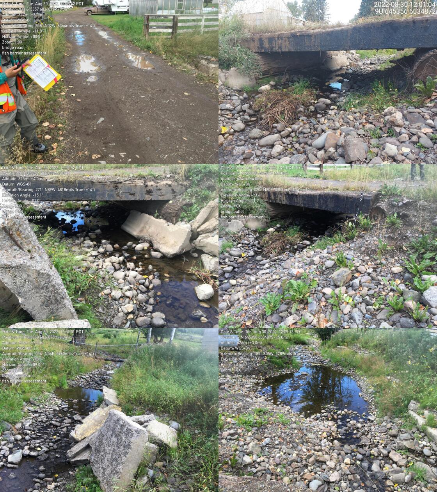 | |||
| Comments: Private property, farm bridge, concrete slabs on both banks upstream of culvert. 12:02 |
| Location and Stream Data |
|
Crossing Characteristics | – |
|---|---|---|---|
| Date | 2022-08-31 | Crossing Sub Type | Ford |
| PSCIS ID | 198111 | Diameter (m) | – |
| External ID | 1802798 | Length (m) | – |
| Crew | MW | Embedded | – |
| UTM Zone | 9 | Depth Embedded (m) | – |
| Easting | 634181 | Resemble Channel | – |
| Northing | 6053316 | Backwatered | – |
| Stream | Coffin Creek | Percent Backwatered | – |
| Road | Spur | Fill Depth (m) | – |
| Road Tenure | Unknown | Outlet Drop (m) | – |
| Channel Width (m) | – | Outlet Pool Depth (m) | – |
| Stream Slope (%) | – | Inlet Drop | – |
| Beaver Activity | No | Slope (%) | – |
| Habitat Value | – | Valley Fill | – |
| Final score | 0 | Barrier Result | Unknown |
| Fix type | – | Fix Span / Diameter | – |
| Photos: PSCIS ID 198111. From top left clockwise: Road/Site Card, Barrel, Outlet, Downstream, Upstream, Inlet.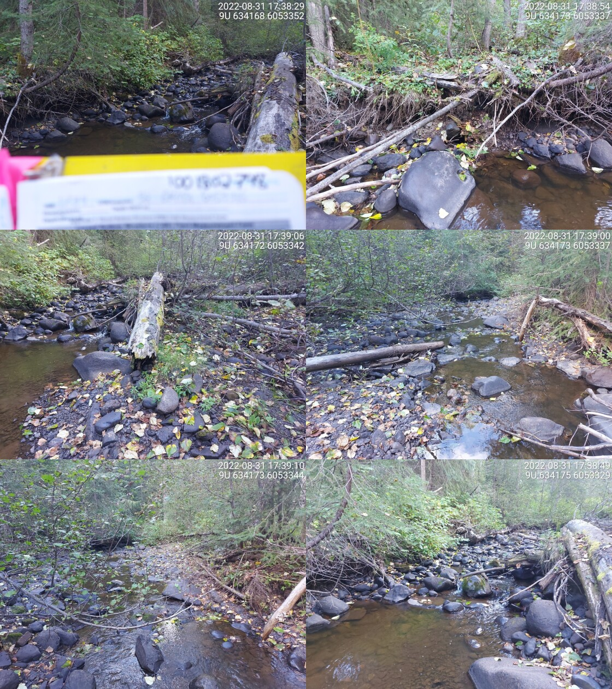 | |||
| Comments: Walked in. No crossing present. Road is more like a hiking trail than a road. 17:34 |
| Location and Stream Data |
|
Crossing Characteristics | – |
|---|---|---|---|
| Date | 2022-08-30 | Crossing Sub Type | Concrete Box |
| PSCIS ID | 198112 | Diameter (m) | 2.5 |
| External ID | 1805507 | Length (m) | 14 |
| Crew | AI, DN, AN | Embedded | Yes |
| UTM Zone | 9 | Depth Embedded (m) | 0.4 |
| Easting | 645034 | Resemble Channel | Yes |
| Northing | 6033148 | Backwatered | Yes |
| Stream | Stock Creek | Percent Backwatered | 100 |
| Road | CN Railway | Fill Depth (m) | 0.5 |
| Road Tenure | CN Rail | Outlet Drop (m) | 0 |
| Channel Width (m) | 2.5 | Outlet Pool Depth (m) | 0.2 |
| Stream Slope (%) | 0 | Inlet Drop | No |
| Beaver Activity | Yes | Slope (%) | 0 |
| Habitat Value | Medium | Valley Fill | Deep Fill |
| Final score | 8 | Barrier Result | Passable |
| Fix type | – | Fix Span / Diameter | – |
Photos: PSCIS ID 198112. From top left clockwise: Road/Site Card, Barrel, Outlet, Downstream, Upstream, Inlet.
|
|||
| Comments: Fully backwatered and embedded concrete box structure on the Railway. Not a fish passage issue at this time. 13:37 |
| Location and Stream Data |
|
Crossing Characteristics | – |
|---|---|---|---|
| Date | 2022-08-29 | Crossing Sub Type | Ford |
| PSCIS ID | 198113 | Diameter (m) | – |
| External ID | 1802069 | Length (m) | – |
| Crew | AI, MW, VJ, TP | Embedded | – |
| UTM Zone | 9 | Depth Embedded (m) | – |
| Easting | 665598 | Resemble Channel | – |
| Northing | 6052306 | Backwatered | – |
| Stream | Johnny David Creek | Percent Backwatered | – |
| Road | Spur | Fill Depth (m) | – |
| Road Tenure | Unknown | Outlet Drop (m) | – |
| Channel Width (m) | – | Outlet Pool Depth (m) | – |
| Stream Slope (%) | – | Inlet Drop | – |
| Beaver Activity | Yes | Slope (%) | – |
| Habitat Value | – | Valley Fill | – |
| Final score | 0 | Barrier Result | Unknown |
| Fix type | – | Fix Span / Diameter | – |
| Photos: PSCIS ID 198113. From top left clockwise: Road/Site Card, Barrel, Outlet, Downstream, Upstream, Inlet.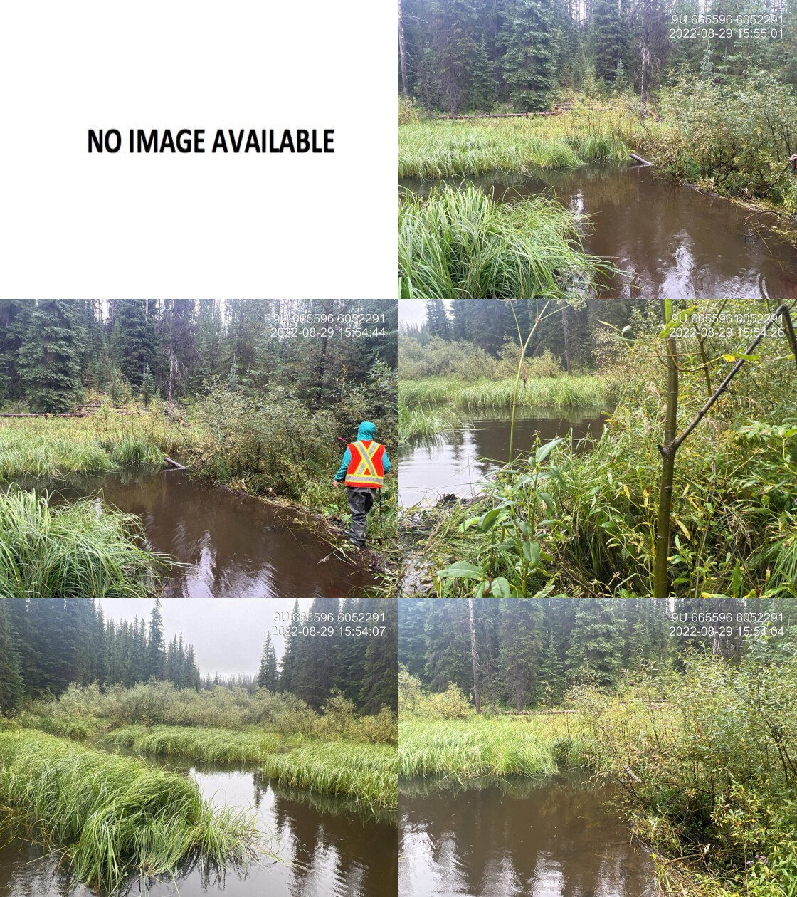 | |||
| Comments: Beaver dam in historic road location. 15:47 |
| Location and Stream Data |
|
Crossing Characteristics | – |
|---|---|---|---|
| Date | 2022-08-30 | Crossing Sub Type | Bridge |
| PSCIS ID | 198114 | Diameter (m) | 12 |
| External ID | 2022083001 | Length (m) | 5 |
| Crew | AI, DN, AN | Embedded | – |
| UTM Zone | 9 | Depth Embedded (m) | – |
| Easting | 645564.2 | Resemble Channel | – |
| Northing | 6035219 | Backwatered | – |
| Stream | Stock Creek | Percent Backwatered | – |
| Road | Private | Fill Depth (m) | – |
| Road Tenure | Private | Outlet Drop (m) | – |
| Channel Width (m) | – | Outlet Pool Depth (m) | – |
| Stream Slope (%) | – | Inlet Drop | – |
| Beaver Activity | No | Slope (%) | – |
| Habitat Value | – | Valley Fill | – |
| Final score | 0 | Barrier Result | Passable |
| Fix type | – | Fix Span / Diameter | – |
| Photos: PSCIS ID 198114. From top left clockwise: Road/Site Card, Barrel, Outlet, Downstream, Upstream, Inlet.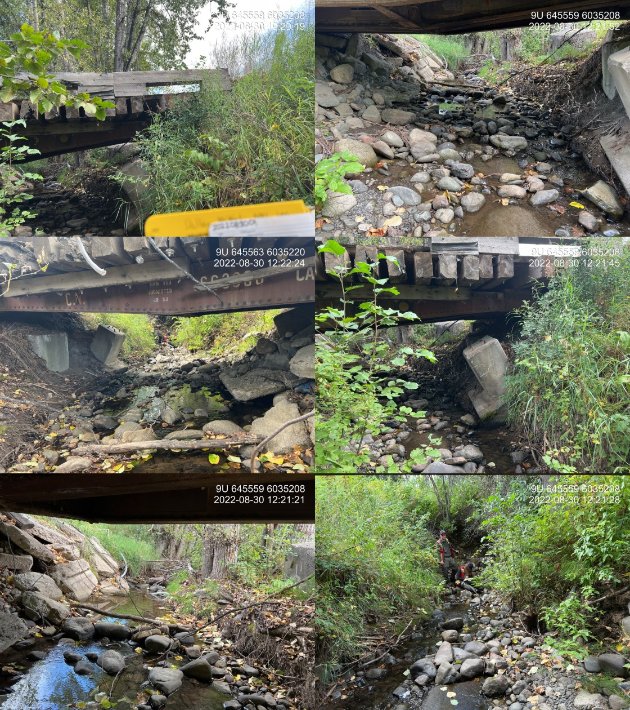 | |||
| Comments: Bridge is old CN railway metal structure and there is extensive concrete slabs in the stream used as rip rap. Private bridge within farmland. 12:20 |
| Location and Stream Data |
|
Crossing Characteristics | – |
|---|---|---|---|
| Date | 2022-09-10 | Crossing Sub Type | Round Culvert |
| PSCIS ID | 198115 | Diameter (m) | 1.25 |
| External ID | 2022091001 | Length (m) | 22 |
| Crew | AI | Embedded | No |
| UTM Zone | 9 | Depth Embedded (m) | – |
| Easting | 590210.7 | Resemble Channel | No |
| Northing | 6122882 | Backwatered | No |
| Stream | Tributary to Waterfall Creek | Percent Backwatered | – |
| Road | 13 Avenue | Fill Depth (m) | 1.5 |
| Road Tenure | New Hazelton | Outlet Drop (m) | 0 |
| Channel Width (m) | 2.8 | Outlet Pool Depth (m) | 0.4 |
| Stream Slope (%) | 3 | Inlet Drop | Yes |
| Beaver Activity | No | Slope (%) | 1 |
| Habitat Value | High | Valley Fill | Deep Fill |
| Final score | 24 | Barrier Result | Barrier |
| Fix type | Replace with New Open Bottom Structure | Fix Span / Diameter | 10 |
| Photos: PSCIS ID 198115. From top left clockwise: Road/Site Card, Barrel, Outlet, Downstream, Upstream, Inlet.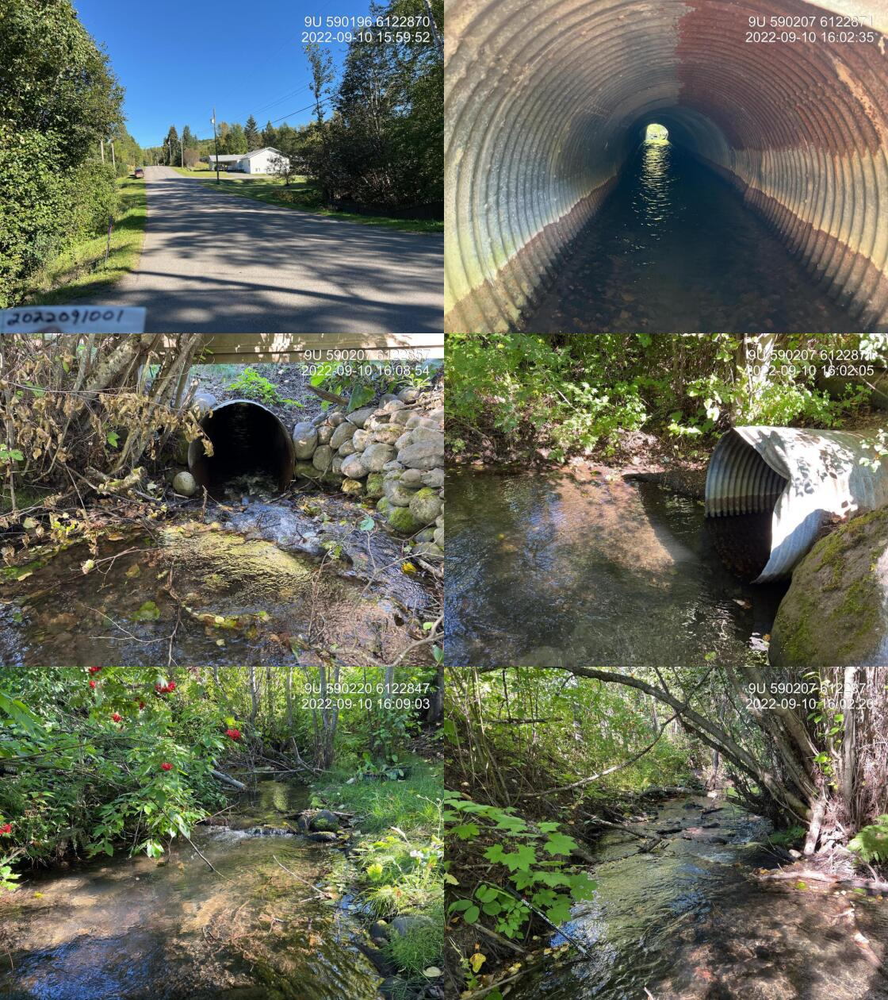 | |||
| Comments: This is waterfall Creek. It does not show up in the freshwater atlas as here, however this is the main flow. Numerous fry and parr observed upstream of the crossing. No paper card for site. 16:03 |
| Location and Stream Data |
|
Crossing Characteristics | – |
|---|---|---|---|
| Date | 2022-09-10 | Crossing Sub Type | Round Culvert |
| PSCIS ID | 198116 | Diameter (m) | 1.5 |
| External ID | 2022091002 | Length (m) | 27 |
| Crew | AI | Embedded | No |
| UTM Zone | 9 | Depth Embedded (m) | – |
| Easting | 590233.2 | Resemble Channel | No |
| Northing | 6123183 | Backwatered | No |
| Stream | Tributary to Waterfall Creek | Percent Backwatered | – |
| Road | Highway 16 | Fill Depth (m) | 1 |
| Road Tenure | MoTi | Outlet Drop (m) | 0 |
| Channel Width (m) | 3.9 | Outlet Pool Depth (m) | 0.2 |
| Stream Slope (%) | 2.5 | Inlet Drop | Yes |
| Beaver Activity | No | Slope (%) | 2.5 |
| Habitat Value | High | Valley Fill | Deep Fill |
| Final score | 24 | Barrier Result | Barrier |
| Fix type | Replace with New Open Bottom Structure | Fix Span / Diameter | 10 |
Photos: PSCIS ID 198116. From top left clockwise: Road/Site Card, Barrel, Outlet, Downstream, Upstream, Inlet.
|
|||
| Comments: Stream is not mapped correctly in the freshwater atlas. This is waterfall creek. Great flow, patches of gravel suitable for coho spawning. Right within the town of New Hazelton. Trap and truck coho operation conducted by Chicago Creek Restoration Society with spawners transplanted just downstream of the railway. 16:34 |
| Location and Stream Data |
|
Crossing Characteristics | – |
|---|---|---|---|
| Date | 2022-09-10 | Crossing Sub Type | Round Culvert |
| PSCIS ID | 198117 | Diameter (m) | 1.8 |
| External ID | 2022091003 | Length (m) | 19 |
| Crew | AI | Embedded | No |
| UTM Zone | 9 | Depth Embedded (m) | – |
| Easting | 590200.9 | Resemble Channel | No |
| Northing | 6123262 | Backwatered | No |
| Stream | Tributary to Waterfall Creek | Percent Backwatered | – |
| Road | 9th Avenue | Fill Depth (m) | 1 |
| Road Tenure | New Hazelton | Outlet Drop (m) | 0.2 |
| Channel Width (m) | 2.6 | Outlet Pool Depth (m) | 0.1 |
| Stream Slope (%) | 1 | Inlet Drop | Yes |
| Beaver Activity | No | Slope (%) | 1 |
| Habitat Value | High | Valley Fill | Deep Fill |
| Final score | 29 | Barrier Result | Barrier |
| Fix type | Replace with New Open Bottom Structure | Fix Span / Diameter | 10 |
| Photos: PSCIS ID 198117. From top left clockwise: Road/Site Card, Barrel, Outlet, Downstream, Upstream, Inlet.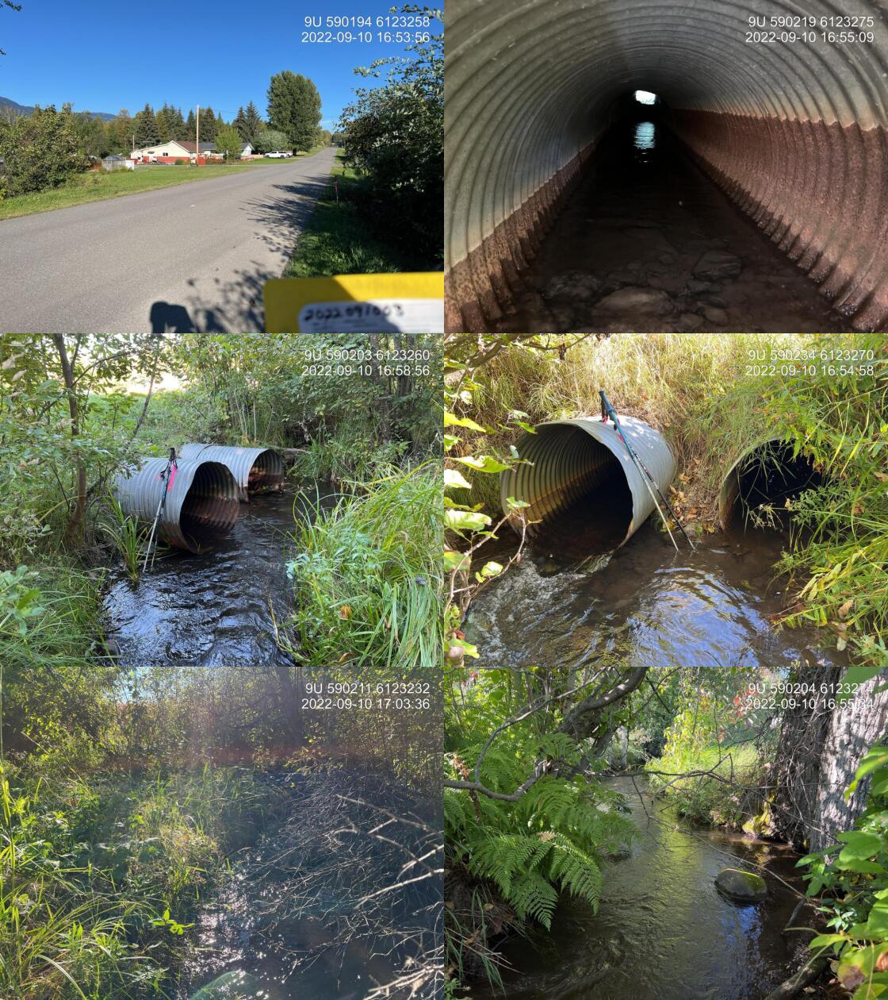 | |||
| Comments: Two 0.9 pipe added together for width. Left pipe has significant blockage 1/3 of the way through the pipe. Right Bank of the stream has an empty lot with only grass and invasive weed riparian. 16:52 |